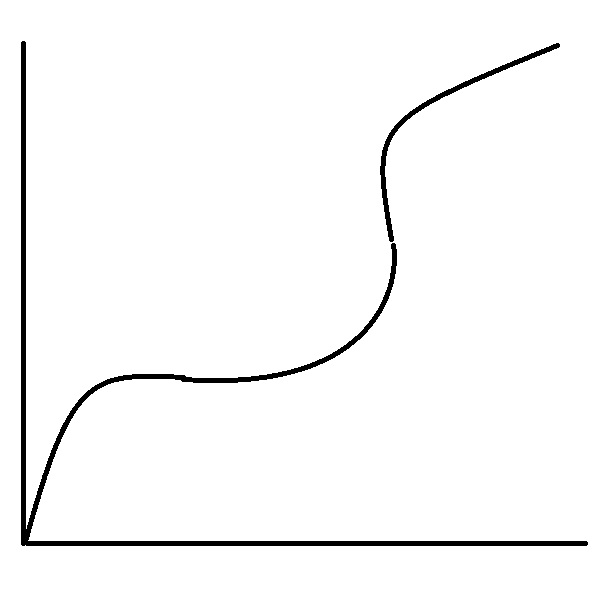

우리의 심장과 뇌는 귀여움을 좋아한다.
저는 하루종일 귀여운 동물만 보고 살 수 있습니다. 이는 우리의 삶에
아주 중요한 순간인 동시에 자칫 인류애를 파괴시키는 자조적이며 무기력한 결과를
초래할 수도 있기 때문입니다. 그 원인은 바로 우리의 심장과 뇌가 이들의 귀여움에 환장하는다는 사실인데요,
그 기원과, 영향에 대해 설명하도록 하겠습니다.

!!!목차!!!
- 귀여움이란 왜 존재하는가!
- 귀여움과 심장질환 관계
- 귀여운 존재들 분석
- 의도하지않은 귀여움에 대해
안녕하세요 오리배 연구소입니다